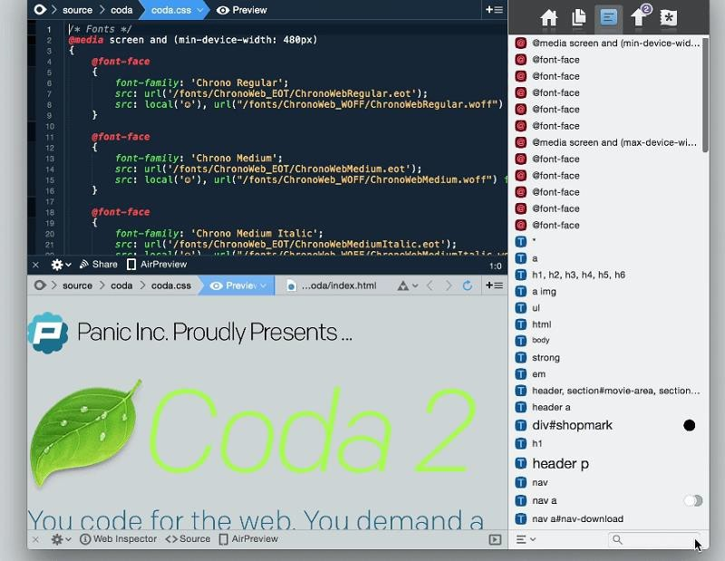

Coda (editor para MAC y IOS)

Coda no se limita a un editor de texto, sino que ofrece una serie de características extras. Teniendo en
cuenta
que podemos añadir todos los plugins que queramos, podríamos estar hablando de Coda durante días enteros
Características:
-
Gestor de archivos: Desde la propia aplicación podemos gestionar todos los documentos necesarios
para
crear la página web (documentos de texto, CSS, HTML, imágenes, carpetas…) gracias a su
explorador de
archivos. Asimismo estos documentos pueden estar en local o en un servidor mediante FTP, WebDAV
u
otros.
-
Visualizador de resultados: Obviamente mientras picamos el código es ideal poder visualizar los
cambios
en la página. Para ello Coda ofrece una vista previa en tiempo real. Esta vista previa incluso
la
podemos abrir en el iPhone o el iPad gracias a AirPreview para ver cómo se visualiza en otras
pantallas.
-
Clips para automatizar: Desde Coda podemos configurar una serie de bloques de código que solemos
utilizar a menudo para no tener que andar buscándolos y copiándolos, simplemente pulsamos el
botón y
se
añaden al texto.
-
Valdidador HTML y editor MySQL: Entre muchas otras opciones Coda nos permite por ejemplo validar
nuestro
código HTML para ver si cumple con los estándares o editar y definir la estructura de una base
de
datos
en MySQL.